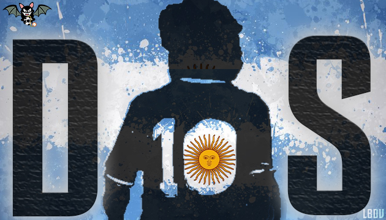
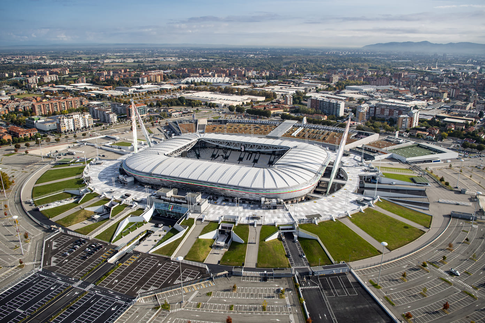

Cicirello
Il calcio è la mia passione,mi chiamo Giacomo e ho 16 anni, ho giocato nel Genoa per 2 anni e successivamente 3 anni nell'Entella e tutt'ora sto giocando ma in una squadra dilettantistica.
la lega migliore del mondo!De Lorenzo
Il calcio è la mia vita, mi chiamo Emanuele e ho 15 anni, ho giocato a calcio 2 anni e in questo momento mi piace gurdare le partite però senza giocare.
Squadra migliore d'Italia